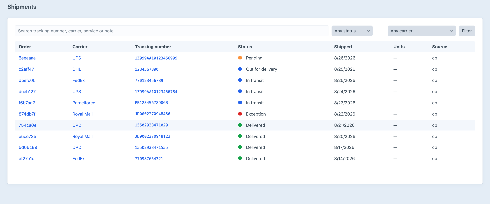
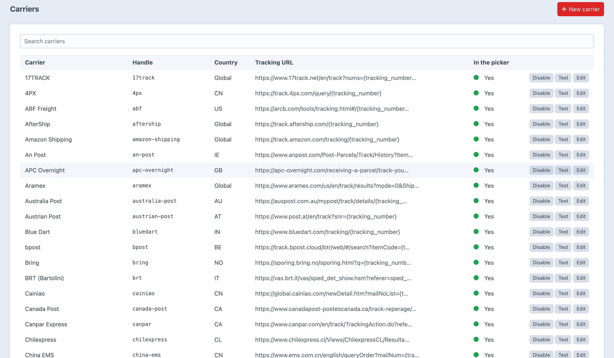

Tracking numbers your customers can actually follow.
Carrier-agnostic shipment tracking — 130 carriers, an email widget, and a tracking page that needs no account.
So the same number sent twice updates one shipment instead of creating a second — which matters, because fulfilment services retry and merchants re-upload spreadsheets.
Six continents, plus LTL freight, print-on-demand and the aggregators.
A carrier Trackr does not recognise is still recorded — a link that 404s is worse than no link.
{{ craft.trackr.widget(order) }} — and that is the whole integration.
Most Commerce stores take guest orders. A guest who cannot log in still wants to know where the parcel is.
Enter your order number and the email address you ordered with.
Telling a stranger that an order number exists but the email is wrong tells them the order number exists.
Say which line items and how many are in the box. The order holds at partially shipped until the units add up.
Point your fulfilment service, ERP or label printer at one endpoint — or drop a CSV in a watched folder and put it on cron.
Every parcel state, from label created to delivered — and the ones that went wrong.

Each with its tracking URL, testable from the same screen.
